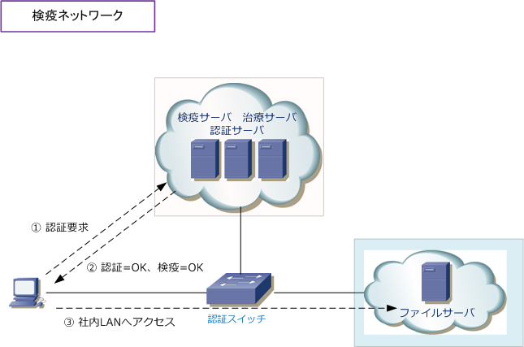
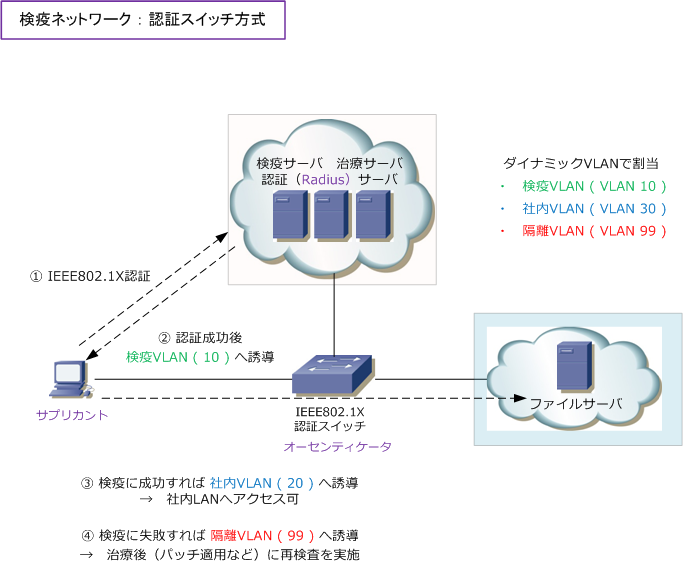
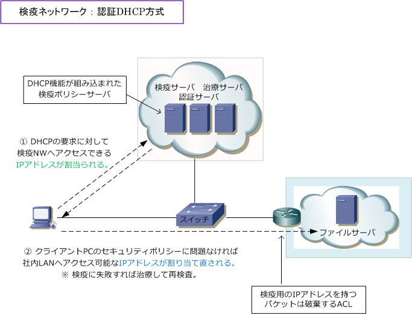

Quarantine Network
検疫ネットワークとは
検疫ネットワークでは、例えば企業ネットワークに接続するクライアントPCにインストールされたウィルス 対策ソフトが最新の状態でない場合、ネットワークアクセスを拒否することができます。検疫ネットワーク の検疫は「 伝染病の蔓延防止のための必要な措置 」という意味ですが、コンピュータネットワークでその 概念を適用して、内部のネットワーク（社内LAN）でセキュリティ強度の高いネットワークを実現できます。

検疫ネットワークの仕組み
検疫ネットワークでは、以下の3つの機能により問題のあるPCを社内LAN接続させないようにしています。
| 検疫の3ステップ | 説明 |
|---|---|
| 検査 | 検疫ネットワークでは、社内LAN接続しようとするPCを、先ず検査専用のネットワークに誘導する。 検査専用ネットワークに接続したPCにウィルス感染はないか、ウィルス対策ソフトが最新であるか OSのパッチは最新であるかの検査を行う。検査結果に問題なければ正常に社内LAN接続が行われる。 |
| 隔離 | 検査用ネットワークでクライアントPCのセキュリティポリシーをチェックして、検査結果に問題がない 場合には正常に社内LAN接続ができるが、検査結果に問題がある場合はそのPCを隔離する。隔離された ネットワークは社内LANネットワークと通信できないセグメントであり、各種の治療サーバが配置される。 |
| 治療 | 検査の結果、ウィルス対策ソフトが最新状態でないなどポリシー違反があった場合、治療用サーバで セキュリティ対策ソフトの定義ファイルやセキュリティパッチのアップデートが行われる（治療される） 治療後に再び検査を行い、ポリシー違反がない状態ならば、正常に社内LAN接続が行われるようになる。 |
検疫ネットワーク - 4つの方式
検疫ネットワークではクライアントPCを分離するための方式が大きく4つあります。最もよく使用されている 方式は、IEEE802.1X認証を組み合わせた認証スイッチ方式であり、最もセキュリティレベルが高い方式です。
| 隔離のための4つの方式 | 説明 |
|---|---|
| 認証スイッチ方式 | IEEE802.1X認証に対応したL2スイッチやAPを使用する方式。ユーザ認証時にPCの セキュリティ対策などのポリシーを確認して、スイッチのダイナミックVLAN機能 により、成功すれば社内LANのVLAN、失敗すれば隔離VLANをポートに割り当てる。 |
| 認証ゲートウェイ方式 | ネットワークセグメントの境界に配置する認証ゲートウェイを使用する方式。認証 ゲートウェイを通過する通信が発生した時、ユーザ認証とPCのセキュリティ対策が チェックされ、成功すれば社内LANへアクセスでき、失敗すれば治療サーバとのみ 通信するように隔離。セキュリティ強化したい部分を指定し導入できるソリューション。 |
| 認証DHCP方式 | 検疫サーバのDHCP機能を使用する方式。PCを接続すると、検査用IPアドレスが 割り当てられる。検査に成功した場合は、社内LANにアクセスできるIPアドレスが 再度割り当てられる。固定IPアドレスを設定した場合には効果のないソリューション。 |
| パーソナルFW方式 | 集中管理型パーソナルFWを使用する方式。PCにインストールされたこのソフトと 検疫サーバが連携を行う。PC接続時には検疫ネットワーク以外にアクセスできない ように、パーソナルファイアウォールでブロックを行い、検査が成功すればルールが 変更されて社内LANへアクセスできるようになる仕組み。この方式は接続するPCに 集中管理型パーソナルFWがインストールしていない場合、無効な場合は機能しない。 |
検疫ネットワーク - 認証スイッチ方式
認証スイッチ方式では、クライアントPCが認証スイッチに接続すると先ずIEEE802.1X認証を認証サーバと 行います。認証成功後、認証サーバ (Radiusサーバ) によって検疫VLANがダイナミックVLANにより動的に ポートに割り当てられます。検疫ポリシーサーバによる検疫が成功した場合は、社内LANにアクセスできる VLAN が割り当てられ、社内LANへアクセスできます。検疫に失敗した場合は、隔離VLANがダイナミック VLAN により動的に割り当てられ、治療（OSやウィルスソフトの定義ファイルのアップデート）を行います。 治療後に再検査して、検疫に成功すれば社内LANにアクセスできるVLANが割り当てられることになります。

※ EAP-TLS方式を採用すれば、認証サーバとサプリカントともに証明書を利用し認証が行われ、最もセキュリティが高くなります。
検疫ネットワーク - DHCP方式
DHCP方式では、IPアドレスが設定されていないPCがスイッチに接続すると、DHCPリクエストを送信されて DHCPサーバは先ず検疫ネットワークのみに通信できるIPアドレスを割り当てます。次に、検疫サーバにて PCのセキュリティポリシーに問題がないことを確認します。問題があれば治療を行い、問題がない場合には DHCPサーバから社内LANへアクセスできるIPアドレスの再割り当てが行われ社内LANへアクセスできます。 ※ クライアントPCに固定のIPアドレスが割り当てられている場合はこの検疫ソリューションは成立しません。

※ 検疫済PCと未検疫PCとが同一VLANのポートに接続した場合は相互通信できて、検疫済みPCに悪影響を及ぼす可能性もあります。
| 各方式 | メリット | デメリット |
|---|---|---|
| 認証スイッチ方式 | ・ IEEE802.1Xを使用したユーザ認証が可能 ・ 動的VLANの割当により確実な隔離が可能 ・ 最もセキュリティ強度の高いソリューション |
・ PCが接続するスイッチを全て認証スイッチ にする必要があり、コストがかかる。 ※ 現在では認証対応のL2スイッチが標準的。 |
| 認証ゲートウェイ方式 | ・ 認証ゲートウェイはセキュリティを強化したい 任意の場所に導入できるため柔軟性が高い。 ・ 認証スイッチは不要であり、既存のNW機器 を有効活用できて比較的コストが抑えられる。 |
・ 認証ゲートウェイまでのネットワークでは セキュリティがなく認証せずとも通信でき 認証スイッチほどセキュリティが高くない。 ・ 未検疫と検疫済みPCと完全分離ではない。 |
| 認証DHCP方式 | ・ 認証DHCPサーバを導入し、PCにIPアドレス を割当るシンプルな方式であり導入が容易。 ・ 認証スイッチは不要であり、既存のNW機器 を有効活用できて比較的コストが抑えられる。 |
・ 固定IPアドレスで設定したPCには検疫を 行うことができず、セキュリティが弱い。 ※ 固定IPの接続を防止するシステムが必要。 ・ 未検疫と検疫済みPCと完全分離ではない。 |
| パーソナルFW方式 | ・ パーソナルFWを導入して制御するシンプル な実装であり、導入が容易である。 ・ 認証スイッチは不要であり、既存のNW機器 を有効活用できて比較的コストが抑えられる。 |
・ ユーザ認証ができずセキュリティが弱い。 ・ PCにパーソナルFWを無効化している場合 などは検疫を行えず、セキュリティが弱い。 ・ 未検疫と検疫済みPCと完全分離ではない。 |
※ 未検疫PCと検疫済PCとが混在している場合（L2で分離されていない場合）、検疫済みPCが悪影響を受ける可能性があります。